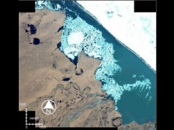
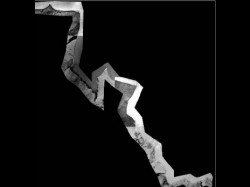
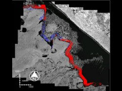

 Coastlines in general are places of change. The Arctic coastline is particularly prone to thermoerosion due to its large component of permafrost. The northernmost coast of Alaska is home to several native communities as well as petroleum drilling operations. This makes it important to monitor and assess the erosion of the coastline. The Beaufort Lagoon in Alaska (69.91 N/ -141.48 W and 69.85 N/ -142.22 W), was selected as a study area. Black and white aerial photos from 1948 at 0.5 meter pixel size, multisectral aerial photos from 1978 at 2 meter pixel size, and IKONOS imagery from 2001 at 1 meter and 4 meter resolution were used to study cahnges in the coastline. All images were acquired in the month of July.
 For further analysis, all images, which were already georeferenced and cropped to the area of interest, were resampled to a common pixel size of one meter. The images were stacked together and further cut out using a coastal area mask, generated using a fixed buffer around the present day coastline. This made the further processing much faster, and also minimized the need to interpret other temporal changes that were not related to coastal erosion.
 Digital image subtraction was carried out on image pairs to detect change in the coastal areas. The digital values in the resultant difference image were then divided into three categories: “significant negative change” (potential erosion), “significant positive change” (potential deposition) and “no significant change”. The three categories were then coded in three different colors: red, blue, and transparent, respectively and then overlayed over the IKONO imagery as refernce to give the final image shown here.
The amount of measured erosion from 1948 to 2001 varies greatly from 11 meters to 151 meters. Other areas, unmeasured, appear to exhibit no signs of erosion at all. Some of these may have eroded too little to be detected at the resolution of these images. Or, perhaps, there has actually been no erosion at those locations. Coastline analysis in the arctic is particularly challenging because of the presence of sea ice. When using image subtraction, changes in the ice patterns near the shore can look deceptively like erosion or deposition at the coastline.